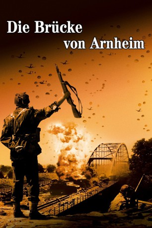

#946 Die Brücke von Arnheim
Alternativ: A Bridge Too Far
Auszeichnungen: 1 BAFTA-Awards gewonnen
 
 IMDB-Wertung: 7.4 / 10
IMDB-Wertung: 7.4 / 10  Metascore: 0
Metascore: 0 
Im Spätsommer des Jahres 1944 eröffnet der britische General Browning seinen Kommandeuren einen Plan, den Feldmarschall Montgomery entwickelt hat. Danach sollen 35.000 alliierte Fallschirmjäger hinter den deutschen Linien in den Niederlanden abspringen, sechs wichtige Rheinbrücken besetzen und halten, bis nachkommende Bodentruppen sich mit ihnen vereinigen können. Auf diese Weise hofft man, von Norden her rasch ins Ruhrgebiet zu gelangen und den Krieg noch vor Weihnachten beenden zu können.
Jahr: 1977
Dauer: 175 Minuten
FSK: 12
Land: USA Studio: United Artists A Transamerica CompanyTonspuren: DTS - ,
Untertitel: Deutsch, Englisch,
Auflösung: 1080p (1920x824) Größe: 15667 MB
Genre: Drama, Geschichte, Krieg
Regisseur:  Richard Attenborough
Richard Attenborough
Drehbuch: Cornelius Ryan, William Goldman
Soundtrack: John Addison
Darsteller:
Datei: X:\1977\Brücke von Arnheim, Die (1977, FSK12, 1920x824).mkv seit 27.04.2015
Festplatte: HD 1971-1979
 Es gibt insgesamt 33 Filme in der Gruppe '1977'
Es gibt insgesamt 33 Filme in der Gruppe '1977'